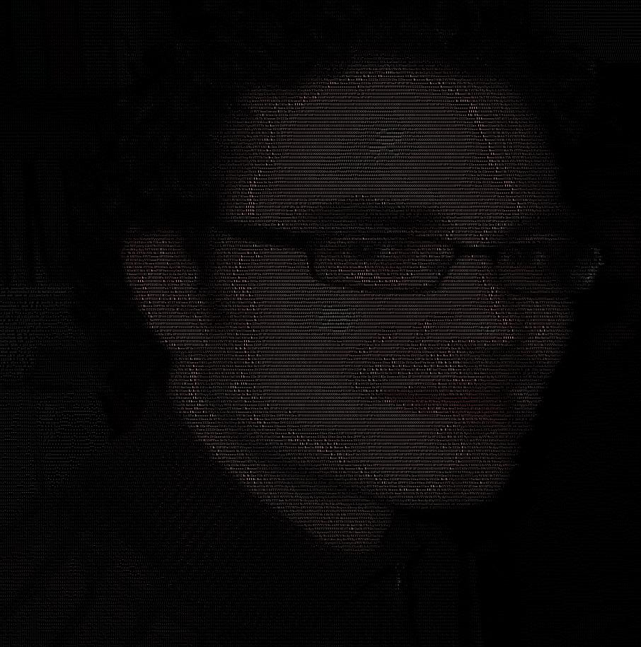

Once a year Draw Jordan Day comes about, and I fail utterly. If you don't know, Draw Jordan Day is a day where we draw our favourite friend in the world, Jordan. Previous renditions live in infamy, but none of those renditions are mine. Why do I fail, you ask? Because I can't draw worth a damn, and the people I surround myself with caaaaaaaaan. It's infuriating and I look really bad by comparison
So this year I came up with a plan. What skills do I have that could possibly make something cool, and semi-(not-really)-artsy? Oh, that's right, I can program!
OK, what then, smartass, what should you actually do? Well, I sit in terminal all day, and I figure that it'd be pretty cool to have an image to ascii generator in case I want to taunt people with my visage, so why not one of those?!
As it turns out there are a lot of things about images that I don't know shit about. There are also a lot of things about fonts I don't know shit about, and... now I do... and I think I don't really want to know these things. So in the end this whole project took longer than I wanted and went through a few iterations.
First things first, I had to come up with a scheme for sampling and rendering Jordan in terms of ascii, my "bright" idea is a sampling of an Jordan image in the ratio of the given font I render him in, and then calculating the relative contrast of that sample versus the entire image. The issue with this turns out a few fold.
To fix these issues I did a few things. First I increased the amount of samples. This made Jordan appear in ascii, but it made there be too much ascii to really see all in one go. So, then I rendered the ascii as an image so that you could see it all at once. The problem with this is that there is so much white space in the image (white background + black text) that Jordan seems really distant/faint. So then I had the bright idea of of sampling the actual colors of the Jordan image, and then rendering the Jordan ascii-image with the ascii colored as the color of that sample from the image (with the hope of increasing the contrast). This actually created this really cool affect where Jordan was just slightly more visible, giving him this really ethereal feel. Well, I said, why don't I just color the BACKGROUND. and leave the text itself white? This acually... hilariously... re-creates the original image (if a little pixelated), but I got the contrast I wanted. From there it was a simple task of using a black background and then rendering the text as white to get the increased contrast. To strengthen the effect I rendered the text as color on the black background to get the "final" result. I am please with what I got, though it's definitely not perfect.
I put the thing on github... HERE: github repo
and here are some example outputs... if you care about that sort of thing.
{kind=link}
{kind=link}
{kind=link}
{kind=link}